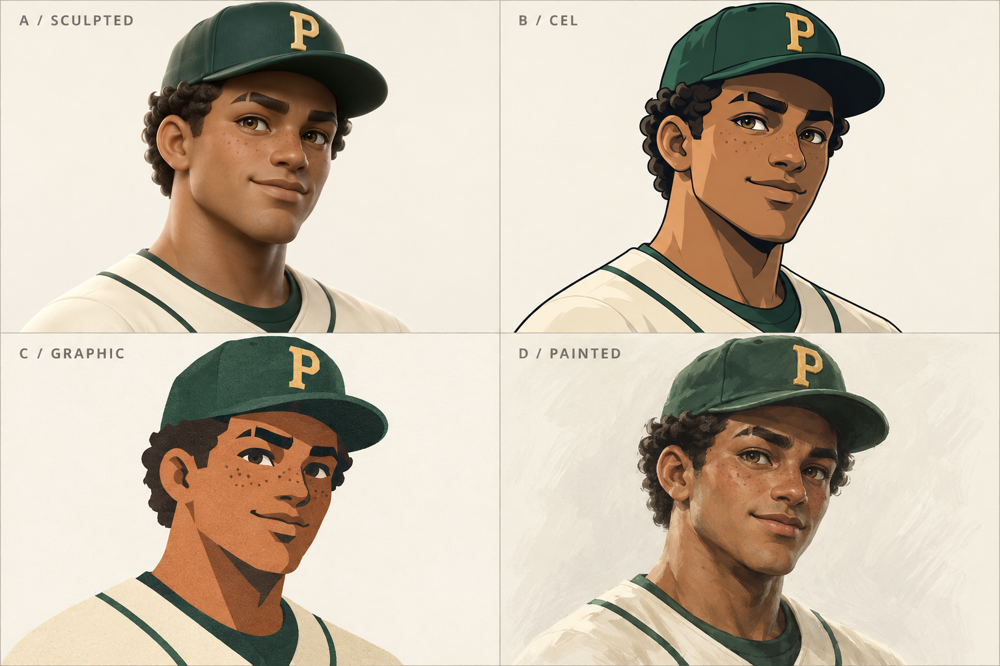
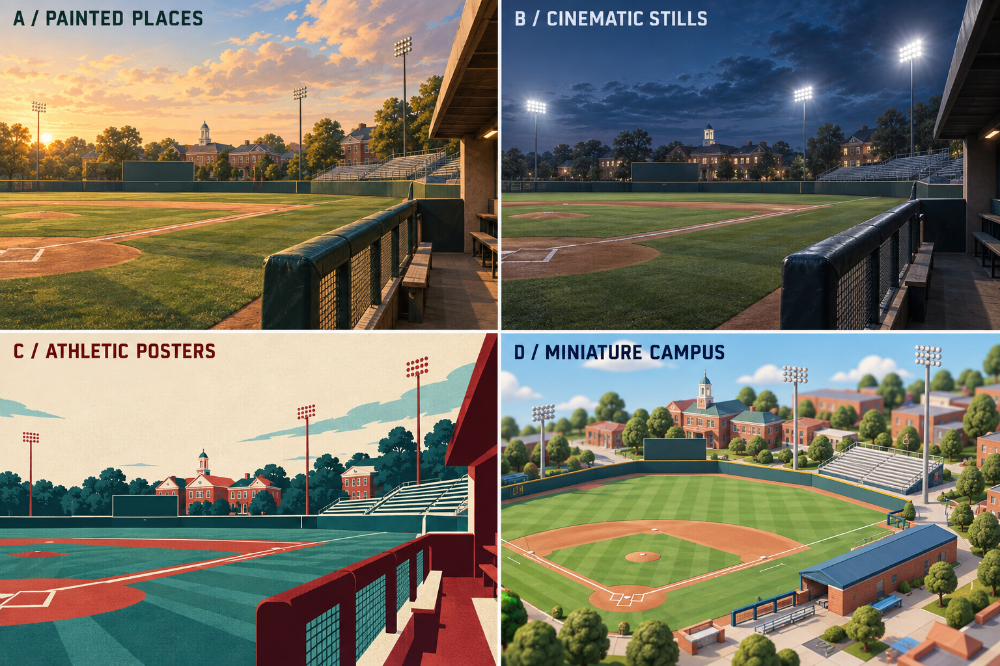

PAWA / CREATIVE DEVELOPMENT / 01
FRISK'S PROPOSAL · APPROVAL PENDINGA world worth coaching.
Four directions. One baseball game. Shape the identity before we rebuild the screens.
September 17, 2026
Loaded with Frisk's proposed mix, awaiting approval. Switch concept screens below. This selector is for comparing designs; production navigation will use one shared five-destination model. Direction buttons apply an original studio starting recipe. Restore Frisk's proposal below to return to the saved mix.
PAWACOLLEGE BASEBALL DYNASTY
CEDAR VALLEYSEASON 2027 · WEEK 04
CONCEPT / SAMPLE DATAMAKE IT YOUR GAME
Read the creative review ↗Four choices for every key decision.
Choose a category, then an option. Type, palette, portraits, environment, shell, profile and density update the concept above. Player-profile options demonstrate framing and composition, not four finished interaction flows. Team marks and icons have visual swatches; motion and audio are described production choices.
YOUR CURRENT RECIPEFrisk's saved proposal. Approval pending.
THE SAME CHARACTER. FOUR RENDERING METHODS.
Character and world studies.

